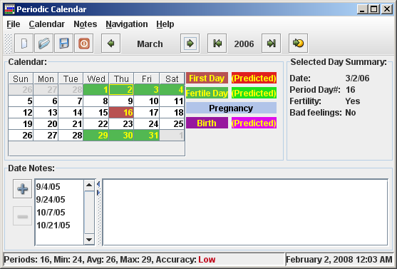
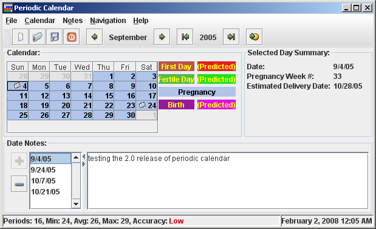
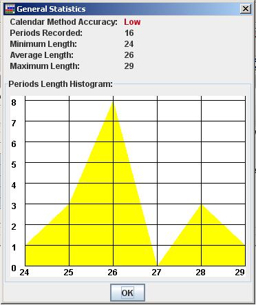
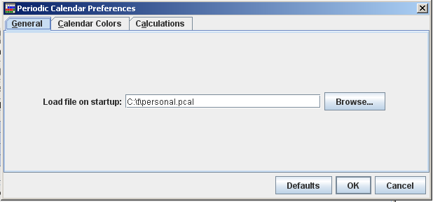
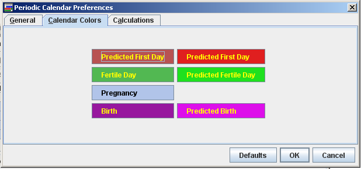
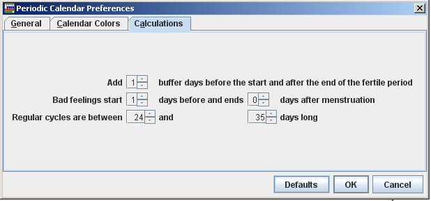

| Periodic Calendar User Manual | ||
|---|---|---|
| Prev | |
|
The Periodic Calendar main window provides calendar-centric information related to the menstrual periods tracking and prediction (see Figure 1).
Figure 1. Main Window
The calendar pane is the core of the application. It shows the colored monthly calendar having the menstruation first day highlighted in red and fertile days highlighted in green (these are the default color schema). Recorded pregnancy and children birth days are highlighted as well. The predicted days are shown in a lighter color. The color swatches to the right shows what does each color mean. The colors can be changed in the preferences dialog.
The Selected Day Summary provides the general information for the day which is currently selected in the calendar. It contains the selected date, days since the cycle start, fertility and if you might feel uncomfortable. Some women feel uncomfortable near the beginning of each cycle. The uncomfortable days range can be selected in the preferences dialog. According to these settings, Periodic Calendar shows if any uncomfortable feelings may appear on the day selected in the calendar.
The new menstruation can be recorded either using the calendar context menu which is shown on right mouse click, or using the main menu item Calendar->Add Menstruation Record. If the record was entered by mistake, it can be removed from the calendar context menu or using the main menu item Calendar->Delete Record.
While adding the new records to the calendar, you will notice that the predicted fertile period is shown wider than the past fertile periods. This happens because the fertile period starting and ending dates depend on the cycle length. The prediction is made in "safer" way from the contraception view point highlighting all probably fertile days.
Main window status bar area shows the summary information about all recorded periods. This includes the recorded periods count, and minimum, average and maximum period length. Basing on the periods length deviation from the medium value, the general calendar method accuracy is evaluated and shown in the status bar as well.
Calendar dates can be navigated using the tool bar month and year navigation buttons or the Navigation main menu items.
The following shortcut keys can also be used for quick calendar navigation:
The pregnancy can be recorded using the main menu item Calendar->Record Pregnancy
The pregnancy start is calculated as the first day of the last menstruation cycle. If there are reasonable menstruation records in the past, the Record Pregnancy dialog might appear proposing to chose either the last menstruation date or current date as the pregnancy selection date.
During the pregnancy, slightly different information is presented by the application (see Figure 2.).
Figure 2. Main Window - Pregnancy Period
If the selected day is within the recorded pregnancy period, the Selected Day Summary is changed to show the pregnancy week number and the predicted baby birth date.
To make the records complete, the baby birth date can also be recorded (using Calendar->Record Birth main menu item).
The pregnancy period is shown from the pregnancy start date to the birth record date or to the pregnancy interuption date which also can be recorded. If there is no birth or interruption records - the pregnancy is shown till the estimated birth date (9 month).
If the menstruation is recorded before the 9-month period end, the pregnancy is shown to the first menstruation date.
The main window section below the calendar allows entering and viewing the notes which can be added for any day.
New note for the current day can be added using the plus button near the notes list or from the main menu.
If the current day already has a note, this note is automatically shown in the notes area.
The note for the current day can be deleted using the minus button or the corresponding main menu item (Notes->Remove Note).
Statistics dialog provides the general statistics for the recorded periods as well as the periods length histogram which shows the period length distribution (see Figure 3).
Figure 3. Statistics Dialog
Periodic Calendar settings can be changed in the preferences window which can be shown using the File->Preferences... main menu item.
The General section of the preferences dialog allows to choose which file will be loaded on startup. This can be overridden by the command line parameters (see Figure 4).
Figure 4. Preferences - General
Calendar preferences section allows changing the calendar colors (see Figure 5.).
Figure 5. Preferences - Calendar
Calculations preferences section allows changing the periods prediction and other calculations parameters (see Figure 6.).
Figure 6. Preferences - Calculations
Add XX buffer days the start and after the end of the fertile period can be used to add the "buffer" days to the fertile period, to be more safe about the contraception, or to make the fertile period narrower (entering the negative values), showing the most probable fertile days if conception is the goal.
Bad feelings start XX days before and end YY days after menstruation line specifies the range of days which may have the uncomfortable feelings. This does not impact any calculations - it is used just for the user convenience.
Regular cycles are between XX and YY days long option defines which cycles should be taken into account during the next cycle length prediction. It might happen that some cycles can last longer or shorter than usually. If these cases are rather exceptions, their influence on the calculations can be eliminated. Hoverer having such "unusual" cycles makes the calendar method almost useless for the natural family planning.
Import/Export functionality is available from the File main menu.
At this point only one format is available for the import and export. This is the Periodic Calendar 1.x version file format which contains only the menstruation periods starting dates.
Imported dates will be appended to the current data file preserving all current records.
Please keep in mind, that old version of the Periodic Calendar did not use the pregnancy records and notes. This information will not be included in the export file.
Periodic Calendar accepts single command line parameter which is supposed to be a name of the file to open on startup.
Usage example:
java -jar pcal.jar c:\docs\myfile.pcal